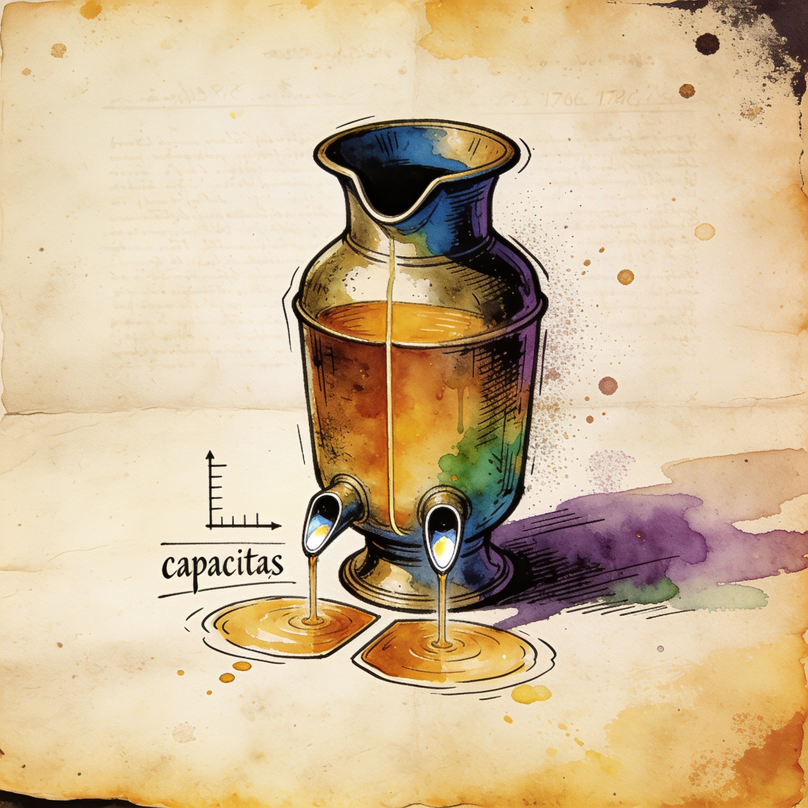

Hardware
RTX Pro 5500 Blackwell lands with 84GB of GDDR7 for one-pool local LLMs
NVIDIA listed the RTX Pro 5500 Blackwell Workstation Edition with 21,760 CUDA cores - the same GB202 core count as the GeForce RTX 5090 - plus 84GB of ECC GDDR7 at roughly 1,400 GB/s on a 448-bit interface. The trade is capacity over bandwidth: 28 clamshell GDDR7 chips double the memory of the 5090, which keeps 1,790 GB/s on 512-bit. MIG support means the 84GB can run as one pool for 70B-plus models or split into two isolated 42GB instances.